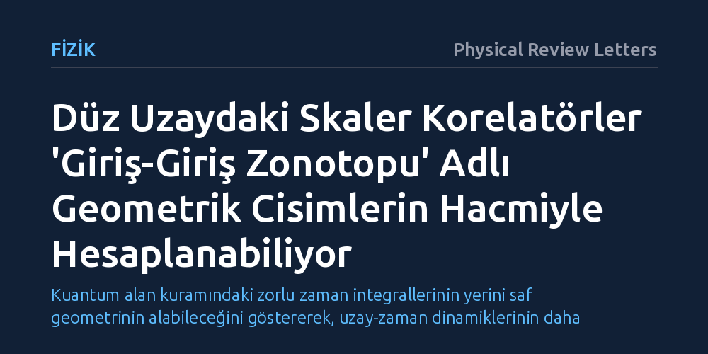

FIZIK · Physical Review Letters · 2026-10-19
Araştırmacılar, düz uzaydaki parçacık korelasyonlarının karmaşık zaman integralleri yerine çokboyutlu geometrik şekillerle hesaplanıp hesaplanamayacağını araştırdı. 'Giriş-giriş zonotopları' adı verilen bu cisimlerin sınır yapısının ve ikili hacimlerinin, skaler korelatörleri ve çarpanlara ayrılma özelliklerini doğrudan verdiğini gösterdiler.
Kuantum alan kuramındaki zorlu zaman integrallerinin yerini saf geometrinin alabileceğini göstererek, uzay-zaman dinamiklerinin daha temel bir geometrik yapıdan türediği fikrini güçlendiriyor.

Kuantum alan kuramı ve kozmolojide araştırmacıların yanıt aradığı en temel sorulardan biri, parçacıkların belirli anlarda nasıl davrandığını ve birbirleriyle nasıl korelasyonlar kurduğunu öngörebilmektir. Bu etkileşimler 'eşzamanlı korelatörler' olarak adlandırılır ve erken evrenden kalan kozmik mikrodalga arka plan ışımasındaki desenlerin anlaşılmasında kilit rol oynar. Ne var ki geleneksel fizikte bu korelasyonları hesaplamak, parçacıkların geçmişten günümüze evrimini izleyen son derece karmaşık ve zahmetli zaman integrallerini çözmeyi gerektirir.
Fizikçiler bu hesaplamalar için 'giriş-giriş' (in-in) biçimciliği adı verilen bir yöntem kullanır. Bu yaklaşım, sistemin durumunu geçmişten bugüne taşıyıp ardından tekrar geriye doğru evriltmeyi içerdiğinden, hesaplanan matematiksel terimlerin ve Feynman diyagramlarının sayısı hızla büyür. Fizik dünyasında uzun süredir tartışılan temel soru, doğanın bu sonuçları üretmek için gerçekten bu kadar dolambaçlı bir zaman integrali sürecine ihtiyaç duyup duymadığı, yoksa bu sonuçları çok daha doğrudan veren saklı bir geometrik düzenin bulunup bulunmadığıdır.
Araştırmacılar bu soruyu yanıtlamak için laboratuvar deneyleri veya gözlemler yerine kuramsal fizik ve modern cebirsel geometri araçlarını kullandı. Saçılma süreçlerinde daha önce keşfedilen ve parçacık etkileşimlerini geometrik cisimlerin hacimlerine bağlayan pozitif geometri yaklaşımlarından yola çıkarak, benzer bir mantığın eşzamanlı korelasyonlar için de geçerli olup olamayacağı sınandı. İnceleme, en yalın durumu temsil eden düz uzaydaki skaler alanlar üzerinde yürütüldü.
Araştırmada 'Minkowski toplamı' olarak bilinen bir geometrik yöntemle doğru parçaları bir araya getirilerek 'zonotop' adı verilen özel çokyüzlüler inşa edildi. Yazarlar bu çalışmaya özgü olarak 'giriş-giriş zonotopları' ailesini tanımladı. Bu geometrik cisimler, geleneksel yaklaşımdaki zaman adımlarını ve etkileşim katkılarını çokboyutlu bir cismin kenar, köşe ve yüzeylerine birebir haritalandıran bir yapı sundu.
Çalışmanın ortaya koyduğu temel bulgu, inşa edilen giriş-giriş zonotoplarının sınır yapısının, skaler korelatörlerin fiziksel çarpanlara ayrılma yapısını eksiksiz biçimde taklit etmesidir. Geometrik cismin sınırları incelendiğinde, bu sınırların daha düşük boyutlu zonotopların çarpımlarına ayrıştığı görüldü. Bu durum, fiziksel bir süreçte parçacıkların belirli enerji veya momentum sınırlarında bağımsız alt süreçlere bölünmesiyle birebir örtüşmektedir.
Bunun da ötesinde yazarlar, bu çokyüzlülerin 'kanonik form' adı verilen diferansiyel formlarını orijinde hesaplamanın—veya denk olarak eşlenik ikili çokyüzlünün (dual polytope) hacmini bulmanın—doğrudan aranan fiziksel korelatörü verdiğini gösterdi. Ayrıca dalga fonksiyonunun bileşenlerine ayrılmasının da ikili çokyüzlünün geometrik olarak alt bölümlere (subdivision) ayrılmasına karşılık geldiği basit bir örnek üzerinden kanıtlandı.
Elde edilen bu sonuçlar, fiziksel etkileşimlerin geleneksel uzay-zaman ve zaman evrimi kavramlarına başvurulmadan, tamamen geometrik ve kombinatoryal prensiplerden türetilebileceği yönündeki kuramsal yaklaşımı desteklemektedir. Kuantum süreçlerinde zaman integrallerinin yerini çokyüzlülerin hacim hesabının alabilmesi, uzay ve zamanın temel birer gerçeklik olmak yerine daha derin bir geometrik yapının türemiş sonuçları olabileceği hipotezini güçlendirmektedir.
Bununla birlikte çalışmanın önemli sınırları bulunmaktadır. Araştırma şimdilik sadece kütlesiz veya basit skaler parçacıkları ve düz uzayı ele almaktadır; elektromanyetizma veya kütleçekimi gibi spinli parçacıkları ya da genişleyen evrenin eğri uzay-zaman geometrisini henüz içermemektedir. Bu nedenle bulgular, nihai bir evren modelinden ziyade, eşzamanlı korelasyonların geometrik temsiline yönelik ilk ve kavramsal açıdan sağlam bir adımı temsil etmektedir.